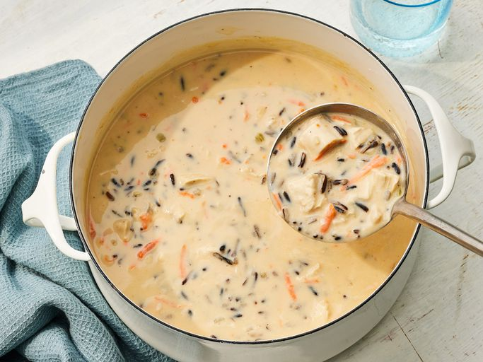

Turkey Wild Rice Soup
Description
This turkey wild rice soup with a creamy broth, tender rice, and chunks of turkey will warm your home and your heart. Save your Thanksgiving and Christmas turkey leftovers and make this soup anytime you're in need of a true comfort food.
Ingredients
- 6 tablespoons butter
- 1/4 cup diced onion
- 1/3 cup all purpose flour
- 4 cups turkey broth
- 1/3 cup shredded carrots
- 2 cups leftover roasted turkey
- 2 cups cooked wild rice
- 1/4 cup chopped slivered almonds
- 1/2 teaspoon kosher salt, or to taste
- 1/2 teaspoon ground black pepper, or to taste
- 1/2 teaspoon lemon juice
- 3/4 cup half-and-half
Steps
- Gather all ingredients.
- Melt butter in a soup pot over medium heat. Add onion and celery; cook and stir until translucent, about 5 minutes.
- Stir in flour, and cook until it turns a pale, yellowish-brown color, 3 to 5 minutes.
- Gradually whisk in turkey stock until smooth and no lumps of flour remain.
- Stir in carrot and bring mixture to a simmer. Cook, whisking constantly, until stock is thick and smooth and carrots are tender, about 2 minutes.
- Stir in turkey, wild rice, almonds, salt, and pepper; simmer until heated through, about 5 minutes.
- Stir in lemon juice and half-and-half; heat until just below a boil. Serve immediately.